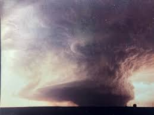

30-second flight-level wind
—kt
Select a flight

Tornado DatabaseRECONExplore recorded aircraft flights with wind barbs, satellite imagery, and a wind profile along each pass.
Standard level factors · eyewall assumption · quality flags applied
Select a flight
Select a flight
Only recorded, unflagged SFMR values are displayed.
Independent of FL reductionThese level-based estimates retain the input averaging period; they are not verified 1-minute sustained winds. Standard factors: 700 mb × 0.90, 850 mb × 0.80, 925 mb × 0.75 (within 25 mb). Use the Recon calculator for JWT / RMW and Powell calculations.
Tracks and wind barbs use original NHC HDOB observations. Meteorological fields are 30-second averages; peak flight-level winds and SFMR winds are 10-second values. Missing and quality-flagged fields are excluded individually. Disconnected observations are not joined across gaps longer than three minutes. Displayed flights are UTC-day segments.
Automatic track retrieval covers Atlantic and Eastern/Central Pacific storms from 2008 onward. The Recon calculator retains vortex-message imports for older storms. Satellite scans use calibrated UW–Madison SSEC McFETCH infrared data at the selected time, with the acquisition time shown. Storm-relative and satellite views align each aircraft point to the interpolated best-track center at that observation’s time.
Best-track intensity appears only as a comparison. Surface estimates use the published level factors above; this viewer does not implement SEAR. Raw 1-second flight data, tail-Doppler wind swaths, dropsondes and radar composites are separate products and are not inferred from HDOBs.
NHC HDOB format · NHC flight-level reductions · Aircraft archive
Choose a cyclone first. Imported text must carry that cyclone’s mission identifier.